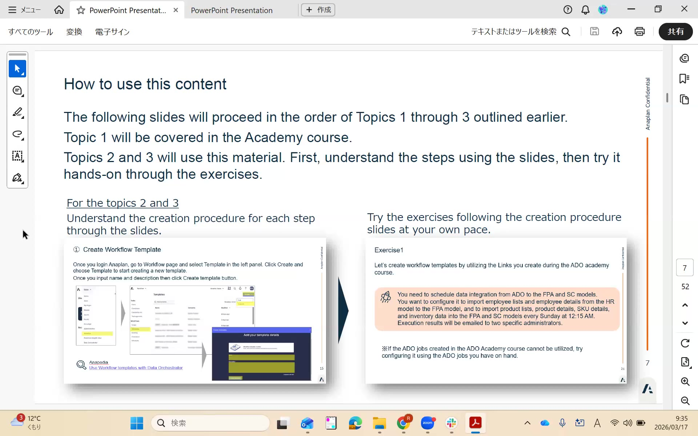

ADO Concepts
ADO at a Glance

Anaplan Data Orchestration (ADO) is a data pipeline tool built directly into the Anaplan platform. It connects external data sources to Anaplan models — transforming, cleansing, and loading data without requiring an external ETL tool or middleware.
The four core building blocks of ADO are:
Source Data
The raw data that enters ADO. This is either a connection (live link to an external system like Salesforce, SAP, or Snowflake) or a file import (CSV uploaded manually or via automation).
InputTransformation Views
A sequence of transform steps that shape the raw source data — filtering rows, casting data types, joining datasets, and computing columns — before the data reaches Anaplan.
TransformLinks
The connection between a transformation view and a target Anaplan model. A link maps columns in the transformed dataset to modules and list dimensions inside the Anaplan model.
LoadPipelines
An orchestration of source → transformation → link steps. A pipeline defines what runs, in what order. You can chain multiple transformation steps and links within a single pipeline.
OrchestrateThe Academy course covers how to build each of these components. This workshop assumes you already understand them. We revisit the concepts here as context for the productionization section — where you'll be duplicating and remapping these components across environments.
Connection Types
ADO supports two primary ways to bring data in:
| Connection Type | How It Works | Best For | Production Consideration |
|---|---|---|---|
| Live Connector | ADO connects directly to an external system (Salesforce, Snowflake, SQL Server, S3, etc.) via a configured connector | Recurring, automated data loads from enterprise systems | You must create a separate production connection with production system credentials — dev connections must not point to production data |
| File Import (CSV) | A CSV file is uploaded to ADO as source data, either manually or via API/CloudWorks | Simpler setups, batch imports, initial builds, and Academy exercises | Upload a production-specific CSV file and create a new source dataset pointing to it |
The Academy course typically uses CSV files as source data. Both Lab A and Lab B in this workshop use CSV-based source data to keep the exercises consistent with what you built during the Academy course. If your implementation uses live connectors, the same principles apply — you just create a production connector instead of a production CSV.
The Dev → UAT → Prod Topology
ADO does not automatically replicate itself across environments the way some ALM tools do. Each environment (Dev, UAT, Prod) requires its own source data, transformation views, and links. The only component that can be "promoted" via a built-in feature is the link — using the "Clone to LLM models" feature. Everything else must be manually duplicated and updated.
Here is what a fully promoted ADO topology looks like for a single dataset:
| Component | Dev Environment | UAT Environment | Prod Environment |
|---|---|---|---|
| Anaplan Model | HR Model (Dev) | HR Model (UAT) | HR Model (Prod) |
| Source Data | Dev CSV / Dev Connector | UAT CSV / UAT Connector | Prod CSV / Prod Connector |
| Transformation View | Employee TV (Dev) | Employee TV (UAT) — duplicated manually | Employee TV (Prod) — duplicated manually |
| Link | Dev Link → HR Model (Dev) | Cloned via "Clone to LLM models" | Cloned via "Clone to LLM models" |
| Workflow Template | Dev Template | Duplicated; action updated | Duplicated; action updated |
When to Use ADO vs. Alternatives
ADO is powerful but not always the right tool. Here is a quick decision guide:
| Scenario | Recommended Approach | Why |
|---|---|---|
| Data from enterprise source (Salesforce, Workday, Snowflake) that needs transformation before loading | ADO with Live Connector | Purpose-built for this — native connectors, visual transformation, scheduled runs |
| Simple flat-file import, no transformation required | CloudWorks Connector or direct flat-file import | ADO adds complexity that isn't needed; CloudWorks handles this more simply |
| Model-to-model sync within Anaplan (data hub pattern) | Native Anaplan import actions | ADO is designed for external data; in-Anaplan data should use native actions |
| Near-real-time data loads (<15 min intervals) | Direct API integration | ADO scheduling minimum is typically 15 minutes; API calls can be more frequent |
| Complex multi-source join before loading to Anaplan | ADO with multiple transformation steps | ADO transformation views support multi-dataset joins natively |
Avoid sourcing data from Anaplan modules that have subsidiary views. ADO will copy all columns from the module view, including calculated and aggregated data points that create complex, unpredictable structures. Always create a dedicated flat export module for ADO source data.